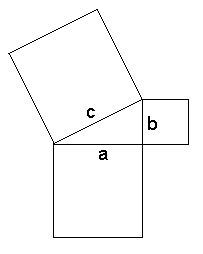
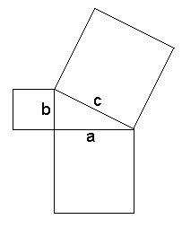

|  |  |
One of the major theorems in all of mathematics is the one called the PYTHAGOREAN THEOREM. It is learned by every schoolboy and schoolgirl at some time in their math courses. The diagrams at the top of this page show the geometric form of the theorem, which says:
In the diagrams above c is the hypotenuse, and a and b are the other two sides, often called the legs of the right triangle. The algebraic form for the theorem is
The mere fact that this true for literally any right triangle in 2-dimensional space is seen by many as outstanding and unexpected. Of course, for many triangles the lengths of one or more sides don't "work out nice". By that, I mean the length of one of them is an irrational number, and we have to give our length as a decimal approximation. (For an example of this, see Word "Lengths" elsewhere in this website.)
But what we want to talk about in this page are those occasions for which all three side lengths are whole numbers. For example, the most famous case of this occurs when the legs are 3 units and 4 units long, thus giving us a hypotenuse of exactly 5 units of length. The equation from above now looks like this:
It's easy to see that this is true, because 25 = 9 + 16. We now say that the set of three numbers 3, 4, and 5 form a Pythagorean Triple. From here on I will write this as {3, 4, 5}; and it will be understood that the two smaller numbers are the legs and the largest one is the hypotenuse.
But can you find more instances of this beautiful relationship? In all that big world of numbers out there, it might be sorta hard to locate other numbers, square numbers that is, that can be expressed as the sum of two other smaller squares. We are lucky, however, that algebra comes to our aid.
Since 100 = 36 + 64, it's clearly established. {6, 8, 10} is a Pythagorean Triple. By now you should be wondering: "What if I tripled the original values, or multiplied all of them by 4, or any other number?" Well, you'd be right! (And you'd be doing good mathematics, thinking that most important question of "What if... .)
Your conclusion now: once you have found a Pythagorean Triple, you can generate as many as you like, or have time to do, by multiplyig the 3 values by some other number. And of course your numbers and squares become much larger, too. So be careful here; perhaps you should bring along your calculator for assistance whenever needed.
Choose any value for x and y that you like -- only let the x be larger than the y, to avoid a negative in the b formula. Observe:
Let x = 5 and y = 2. This produces
a = 2×5×2 b = 52 - 22 c = 52 + 22
= 20 = 25 - 4 = 25 + 4
= 21 = 29
Now we can say {20, 21, 29} is a Pythagorean Triple. Proof? Well, how about this...
292 = 202 + 212 841 = 400 + 441 841 = 841And it's that easy; new triples like magic. And again we can form all the triples our little heart desires by choosing x-y pairs all day long!
If you are an algebra student, a good exercise for you right now would be to prove that the formulas always do their intended job. I mean, prove it with "algebra", not with just a bunch of numerical examples.
[For an interesting use I once made of these formulas, see Pythagoras 1980 in this website.]
We can learn how this applies to our work with triples by looking at our first and second examples earlier: {3, 4, 5} is a primitive triple, whereas {6, 8, 10} is not. The second one is not because 2 is the GCF of the numbers (as we had done purposely by multiplying by 2 in the first place). Of course, it's now obvious that any new triple obtained from an old triple can't be primitive. But when you are using the three formulas, you sometimes have results that are primitive -- as in the triple {20, 21, 29} -- and some that are not.
This brings up a good topic for research:
This can be attacked on two levels: pure logic or by checking out many examples of all kinds and studying the results, much like a real research scientist. Initially, I recommend the second approach, as for most people it might be a little easier. But who knows?
And the answer is out there, waiting to be discovered by you. Go for it!
| Comments? Send e-mail. | Back to top | Go back to Home Page | Go back to Contents |